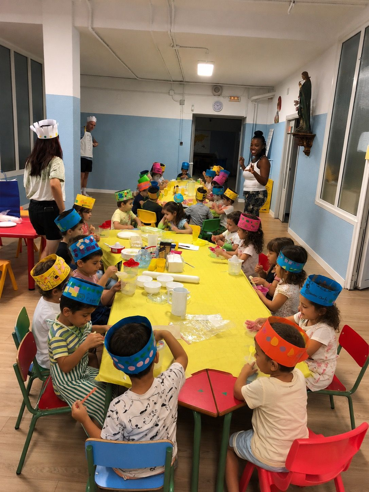
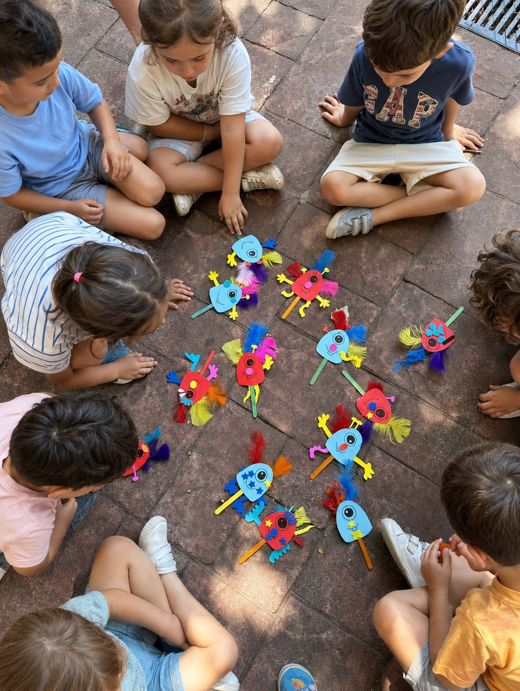
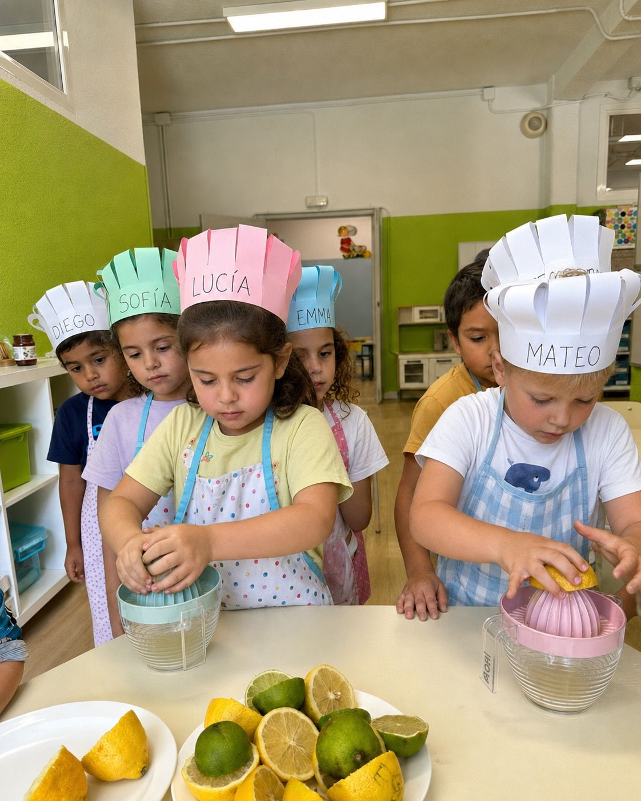
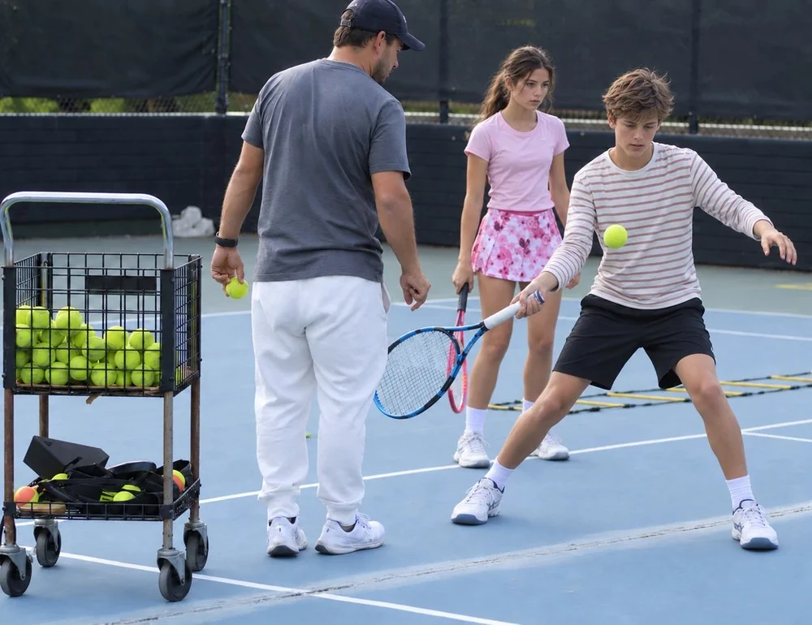
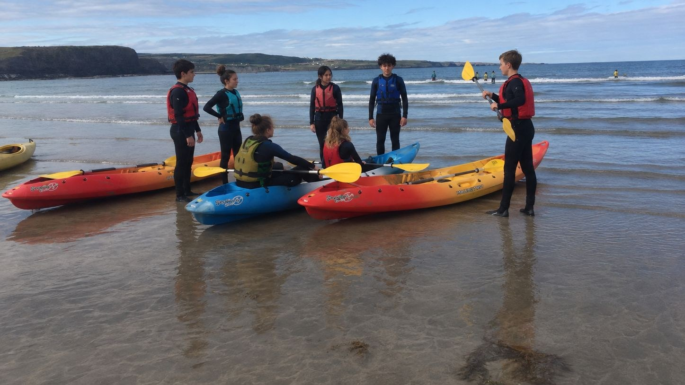
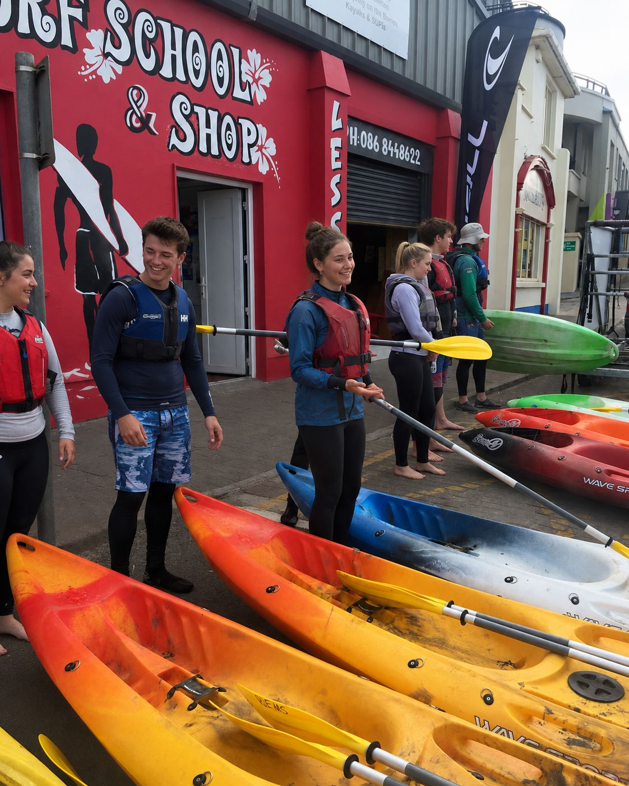
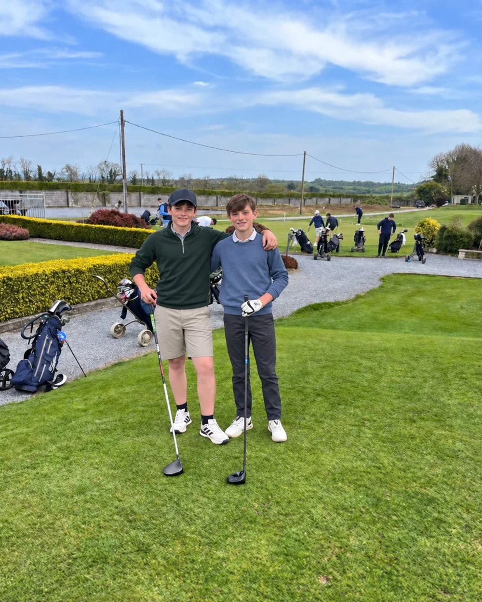
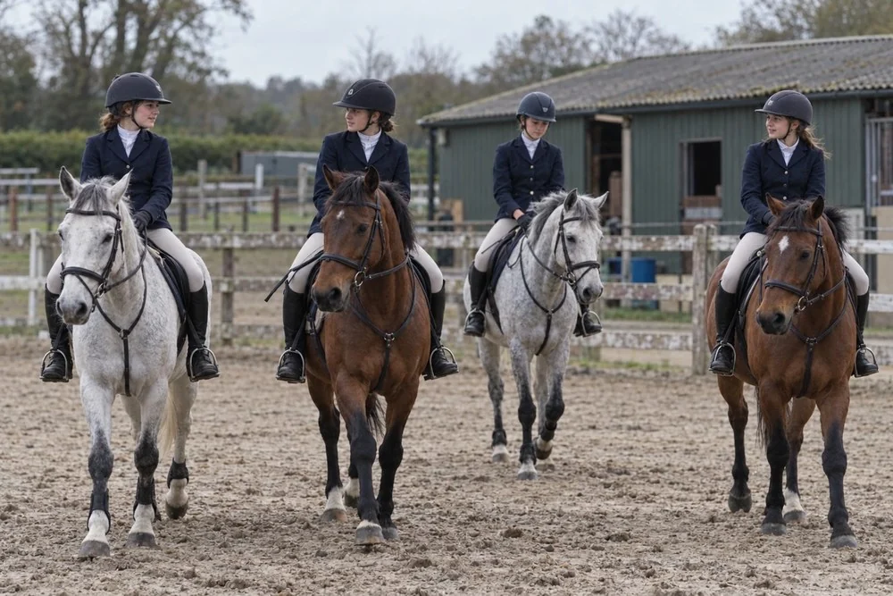
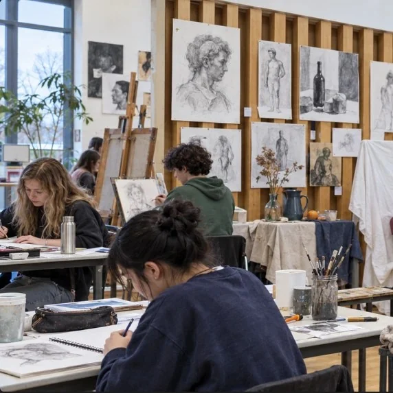
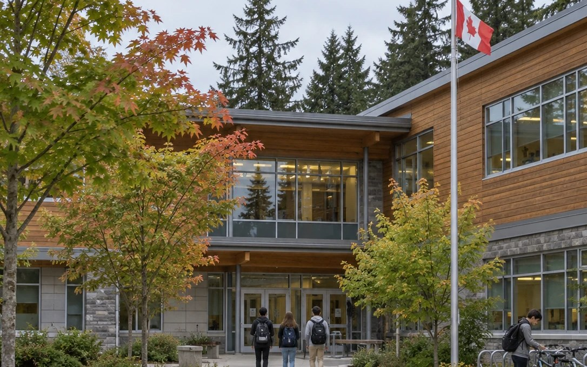

Aprenden inglés jugando
Canciones, cuentos y juegos en inglés, adaptados a su edad.
Desde vivir la experiencia en el extranjero hasta sus primeros pasos en inglés en el colegio.
Inglés en el colegio, campamentos de verano y cursos escolares en el extranjero.


Programas de inglés para cada etapa educativa.
Aquí empezamos
Hasta el final del colegio
Inglés práctico y divertido: canciones, juegos y actividades para familiarizarse con el idioma.
Programas para esta edadInglés extraescolar en el colegioCampamentos de verano en MadridMás vocabulario y confianza para participar, preguntar y compartir ideas.
Programas para esta edadInglés extraescolar en el colegioCampamentos de verano en MadridCampamentos de verano en el extranjeroConversaciones, nuevos retos y mayor autonomía para comunicarse.
Programas para esta edadCampamentos de verano en el extranjeroExplora colegios en el Reino Unido, Irlanda, Estados Unidos o Canadá. Os ayudamos a elegir el que mejor encaja con lo que buscáis.
Cómo es, qué le interesa y qué esperáis vosotros de esta experiencia.
Un equipo cercano y con criterio, con presencia en Madrid y Londres.
Su perfil, sus intereses y vuestras prioridades como familia.
Colegios que encajan, con las razones de cada propuesta.
La admisión y los trámites previstos en el programa que elijáis.
¿Hablamos?Estudiar en el extranjeroCampamentos de verano en el extranjero
Elegid una opción para continuar.Completad los datos en esta misma página. Os orientamos sin compromiso.Contadnos un poco y os orientamos sobre destino, colegio y duración. Sin compromiso.Edad, fechas y lo que le gusta: con eso os orientamos sobre el colegio que mejor encaja. Sin compromiso.
Consulta sobre
VolverTu llamada está reservada. Te llamaremos al número indicado.
Cancelar la llamada Si no puedes atendernos, cancélala y reserva otra hora.
Para niños y niñas de 3 a 9 años, en grupos por edad y con monitores 100 % nativos.
Un verano en el que tu hijo o hija practica inglés sin darse cuenta, mientras canta, juega y crea con otros niños de su edad.

Canciones, cuentos y juegos en inglés, adaptados a su edad.

Bailan, dibujan, crean y cada día hay juegos de agua.

Monitores 100 % nativos, formados para trabajar con niños, en grupos por edad.
Todo en inglés
Ocho retos que se van turnando para que cada día descubran algo nuevo. Y un reto sorpresa cada día.
De 9:15 a 14:30, con tiempo para aprender, jugar y descansar.
Booklet de inglés, storytelling y arts & crafts
Merienda y preparación para los juegos de agua
La actividad más esperada del día
Un momento para descansar antes de seguir
Teatro, deporte o experimentos, según el día
Almuerzo y descanso antes de la recogida
Horario de la última edición; se confirmará con la próxima convocatoria.
Déjanos tus datos y te escribimos en cuanto confirmemos las fechas, la sede y la tarifa.
Está previsto de finales de junio a finales de julio. Publicaremos las fechas exactas, la sede y la tarifa en cuanto estén confirmadas.
Monitores 100 % nativos, formados para trabajar con niños.
Todavía no: te escribiremos para confirmarla cuando se publiquen las fechas.
Del campamento de verano en Madrid a vivir un verano, o un curso entero, en el extranjero. Acompañamos a las familias en cada etapa del camino.
Del 22 de junio al 24 de julio
Cinco semanas. Elige las que quieras; no hace falta que sean seguidas.
Madrid
Sagrado Corazón Rosales y Sagrado Corazón Chamartín.
Se admiten alumnos de otros colegios, no hace falta ser del Sagrado CorazónEl precio total depende del número de semanas que elijas, sean o no consecutivas.
Comedor opcional: 52 € por semana, con un mínimo de 25 alumnos apuntados.
Elige las semanas, completa los datos y envíanos tu solicitud. Revisaremos la disponibilidad antes de confirmar la plaza.
Clases con profesores nativos y en grupos reducidos, durante todo el curso. Para que cada alumno gane soltura y nivel hablando inglés.
Si tu colegio es otro, consúltanos su horario y tarifa.
Cuatro cosas que ocurren en cada sesión, se trabaje lo que se trabaje.
Escuchan y hablan en inglés desde el primer momento, con profesores nativos.
Aprenden a decir lo que piensan y a defender sus propias ideas.
Progresión adaptada a su etapa.
Juegos, proyectos y trabajo en equipo como forma de aprender, no como premio.
El mismo método, adaptado al momento de cada alumno. Consulta qué clubs se imparten en tu colegio.
A través del juego, favoreciendo la comprensión oral y sus primeras conversaciones.
Diálogos cortos, cuentos y canciones.
Proyectos para practicar la expresión y la comprensión en inglés.
Práctica de inglés en situaciones cotidianas.
Exámenes de Cambridge: KET, PET, FCE y CAE.
También ofrecemos campamentos y estancias escolares en el extranjero.
De 6 a 12 años, con grupos adaptados a cada etapa. Los cursos que se imparten dependen de cada colegio.
Por etapa educativa, en grupos reducidos que se abren desde 8 alumnos, para que todos tengan tiempo real de hablar.
Sí. Todo el claustro es nativo y está formado específicamente para enseñar a niños y jóvenes, no solo para hablar el idioma.
El programa va de octubre a mayo, siguiendo el calendario escolar, en horario de tarde dentro del propio colegio.
En el Colegio Sagrado Corazón, 65 € al mes más 35 € al año de material. Si tu colegio es otro, escríbenos y te confirmamos las condiciones.
Descubre los grupos. Si vuestro colegio os ha enviado un enlace de inscripción, acceded desde ese enlace.
Ver grupos por etapaDe una a cuatro semanas en internados británicos, con clases de inglés cada mañana, tardes a elegir, excursiones y alumnos de más de 20 países.
Fechas de 2027. Disponibilidad según el colegio.
Programas acreditados por el British Council.
De una a cuatro semanas. Consultad el precio según el colegio y las fechas. El presupuesto debe detallar alojamiento, actividades y suplementos.
El traslado y algunas actividades se abonan aparte. Consultad también el coste de una noche extra.
Habitación individual o compartida, con baños compartidos y limpieza diaria. Un equipo vive con los alumnos las 24 horas, guarda su pasaporte, su dinero y sus medicinas, y les da la medicación a su hora.
Les esperan en la salida del aeropuerto y los llevan al colegio en minibús desde Edimburgo, Heathrow o Gatwick. El traslado tiene un coste aparte.
Consultad cómo se organiza el vuelo y qué acompañamiento está disponible antes de reservar.
Consultad el horario y el canal de contacto con casa antes de reservar.
No se usan en clase, en las actividades, en las comidas ni por la noche. El equipo los guarda; la familia puede pedir otra cosa por escrito.
Sin alcohol, tabaco ni vapeo. Chicos y chicas solo coinciden en las zonas comunes. Tolerancia cero con el acoso.
El inglés deja de ser una asignatura y se convierte en la lengua de todo el día.
Cada mañana, de 9:00 a 12:30, en grupos reducidos y con profesores cualificados. Aprenden presentando, creando y trabajando en equipo.
Conviven con chicos y chicas de más de 20 países. El inglés es lo que tienen en común.
Deporte, aventura al aire libre, golf, hípica, arte o descubrir el país: cada uno elige su plan.
Un equipo vive en la residencia con los alumnos: conoce a cada uno y está pendiente de él día y noche.
Todos los alumnos tienen 15 horas de inglés a la semana. Los mayores pueden elegir el programa de liderazgo.
Para todos los alumnos
14 a 17 años · nivel B1 o superior
El programa de liderazgo se imparte en Dollar Academy; en otros colegios, consultadlo.
Colegios británicos con residencia, instalaciones deportivas y campus seguros. Os ayudamos a elegir el que mejor encaja con su edad y lo que le gusta.
Dollar · a 45 min de Edimburgo
Único colegio con el programa de inglés y liderazgo.
Perthshire · a 1 h de Edimburgo
El único que admite desde los 8 años.
Musselburgh · a 8 min en tren de Edimburgo
Junto al mar y con la temporada más larga.
Godalming (Surrey) · a 45 min de Londres
Para quien quiere conocer Londres.
Habitaciones individuales o compartidas, con baños compartidos. Limpieza diaria.
Las tardes son para descubrir aficiones. Algunas opciones tienen un suplemento.

Fútbol, tenis, baloncesto, natación… cada día, el que prefieran.

Retos en equipo, juegos al aire libre y actividades creativas.

Kayak, paddle surf, tiro con arco y circuitos de agua, con monitores especializados.

Clases con un profesional en un campo cercano, para todos los niveles.

Para quien empieza y para quien ya monta: cuidado del caballo, pista y paseos.

Escriben su propia historia, la ilustran y la representan.
Castillos, paisajes, ciudades y playas, con la cultura y la historia del lugar.
Debates, presentaciones y escritura, en grupos de 5 como máximo.
El mismo horario en los cuatro colegios.
Horarios aproximados. Los mayores se acuestan a las 23:00.
Los fines de semana salen a conocer el país. Además, entre semana hay salidas de media tarde.
Son ejemplos: los destinos varían según el colegio, las fechas y el tiempo.
El último día reciben su certificado en una ceremonia de graduación y diseñan su propia camiseta, firmada por los amigos que han hecho.
por semana
Hay tienda en el campus y tiempo para compras en las excursiones. El equipo guarda el dinero.
Mejor sin objetos caros. Si toma medicinas o tiene alergias, avisadnos antes.
Edad, nivel de inglés, fechas y lo que le gusta.
Con el precio cerrado y lo que incluye.
Consultad el importe de la señal y el calendario de pagos antes de reservar.
Documentación, maleta y vuelos, para que viaje tranquilo.
Cancelación: hasta 30 días antes de la llegada se devuelve todo salvo la señal; después, no hay devolución.
Desde los 8 años en Strathallan School y desde los 10 en los otros tres colegios, hasta los 17.
No hace falta un nivel concreto: las clases son en grupos reducidos por nivel. Para el programa de liderazgo, un B1.
Pueden elegir habitación individual o compartida. Los baños son compartidos y se limpian a diario.
Los campamentos reciben alumnos de más de 20 países, así que el inglés es la lengua de todos.
Sí, en su tiempo libre. No en clase, en las actividades, en las comidas ni por la noche.
El equipo de la residencia le atiende y os avisa. Por eso el seguro médico es obligatorio.
Hay traslados en minibús desde Edimburgo, Heathrow y Gatwick, con coste aparte. Les esperan en la salida con un cartel.
Consultad la disponibilidad y los plazos de pago del colegio elegido.
Contadnos su edad, su nivel y qué fechas tenéis en mente, y os proponemos el colegio que mejor encaja. La orientación es gratuita.
Pedir orientaciónTambién podéis consultar las estancias de un trimestre o un curso escolar en el extranjero.
Buscamos con vosotros el colegio adecuado para vuestro hijo y os acompañamos en cada paso, desde la primera conversación hasta su llegada.
Cuatro destinos con colegios muy distintos. Entrad en cada uno para ver cómo se estudia y cómo se vive allí.


Lo que más cambia en el día a día, lado a lado.
Orientativo: alojamiento, materias, actividades y plazas se confirman con cada colegio. *En Norteamérica la diferencia horaria cambia según la zona.
Elegid un país para ver cómo se estudia y cómo se vive allí. El mejor encaje depende de vuestro hijo y del colegio.
Internados · Inglaterra y Escocia
Encaja si buscáis una vida de internado organizada, con tiempo para el estudio, el deporte y las artes.
Son orientativas: el colegio y su ubicación se confirman en vuestra propuesta.
Clases, comidas, estudio y buena parte del ocio son en el colegio. Puede haber deporte, música, teatro o clubes, según el centro. Conviene confirmar qué ocurre los fines de semana y en los cierres.
Por encima de la media de la OCDE en matemáticas, lectura y ciencias. Es un dato del país, no de un colegio concreto.
¿Encaja con lo que imagináis para vuestro hijo?
Pedir orientación sobre Reino UnidoFuentes del sistema educativo: Currículo de Inglaterra · Sistema de Escocia · Calendario de Escocia.
Internado o familia anfitriona
Encaja si buscáis estudiar en inglés cerca de España, en un internado o viviendo con una familia.
Son orientativas: el colegio y su ubicación se confirman en vuestra propuesta.
Con una familia se vive su rutina y se va al colegio de día. En internado, la vida gira en torno al campus. Deporte de equipo, música y otras actividades dependen del centro. Conviene confirmar los desplazamientos y si el internado abre los fines de semana.
Por encima de la media de la OCDE en matemáticas, lectura y ciencias, con muy buen resultado en lectura. Es un dato del país, no de un colegio concreto.
¿Encaja con lo que imagináis para vuestro hijo?
Pedir orientación sobre IrlandaFuentes del sistema educativo: Junior Cycle · Senior Cycle y Transition Year · Calendario escolar.
Opciones bajo consulta
Encaja si vuestro hijo tiene autonomía y quiere vivir la vida escolar norteamericana: materias, clubes y actividades.
Son orientativas: el colegio y su ubicación se confirman en vuestra propuesta.
Según el programa, con familia anfitriona o en un internado privado. Clubes, artes y deporte pesan mucho en la vida escolar, aunque no todas las actividades están abiertas a todos. Conviene revisar deporte, transporte y vacaciones.
Por encima de la media de la OCDE en lectura y ciencias, y cerca de la media en matemáticas. Es un dato del país, no de un colegio concreto.
¿Encaja con lo que imagináis para vuestro hijo?
Pedir orientación sobre Estados UnidosFuentes del sistema educativo: Estructura educativa · NCES · Requisitos de graduación: ejemplo de California · Cursos AP · College Board.

Opciones bajo consulta
Encaja si buscáis una experiencia norteamericana y queréis elegir bien provincia, idioma y entorno.
Son orientativas: el colegio y su ubicación se confirman en vuestra propuesta.
Con familia anfitriona o en un colegio privado con alojamiento, según la propuesta. Puede haber deporte, música, artes y actividades al aire libre. No es lo mismo un campus urbano que una localidad pequeña.
Por encima de la media de la OCDE en matemáticas, lectura y ciencias, con diferencias entre provincias. Es un dato del país, no de un colegio concreto.
¿Encaja con lo que imagináis para vuestro hijo?
Pedir orientación sobre CanadáFuentes del sistema educativo: Secundaria y provincias · EduCanada · Educación pública y privada · Canadá.
Información orientativa. PISA 2022 evalúa competencias de alumnos de 15 años: sus medias nacionales no son un ranking de colegios ni una garantía de resultados. La OCDE pide cautela al interpretar los resultados de estos países por limitaciones de muestreo. Los husos se refieren a la España peninsular; *en Norteamérica varían por zona y temporalmente con los cambios de hora.
Comparad las diferencias que más influyen en el día a día. Son puntos de partida para conversar, no perfiles cerrados de alumno.
| Para comparar | Reino Unido | Irlanda | Estados UnidosBajo consulta | CanadáBajo consulta |
|---|---|---|---|---|
| Idioma | Inglés en centros anglófonos | Inglés en centros anglófonos | Inglés | Inglés o francés, según centro |
| Sistema | Currículos distintos en Inglaterra y Escocia | Junior Cycle, Senior Cycle y posible Transition Year | Materias y créditos; requisitos por estado y distrito | Currículo y diploma por provincia |
| Ambiente | Vida de internado y rutinas de campus | Colegio de día con familia o internado | Vida escolar, clubes y entornos muy diversos | Ciudades, localidades y naturaleza, según provincia |
| Distancia | Europa; cerca de España | Europa; cerca de España | Transatlántico; varios husos horarios | Transatlántico; varios husos horarios |
| Puede encajar si… | Busca una vida de colegio estructurada | Valora la convivencia en familia o internado cerca de España | Tiene autonomía y curiosidad por la vida escolar norteamericana | Busca una experiencia norteamericana y quiere elegir bien provincia e idioma |
Contadnos su edad, sus intereses y lo que os importa. Os ayudamos a valorar las opciones.
Estados Unidos y Canadá: opciones bajo consulta. El alojamiento, las materias, las actividades y las plazas se confirman con cada centro. Para volver a estudiar en España, hay que revisar el caso: la incorporación a Primaria o ESO no requiere convalidación; para títulos de ESO o Bachillerato y estudios de Bachillerato se aplican los requisitos correspondientes. Información oficial del Ministerio.
Cinco preguntas y vuestros datos. Con eso preparamos una primera orientación para vuestra familia.
Deporte, música, teatro, aulas y amigos de todo el mundo: lo que llena su semana. Aprender · Convivir · Descubrir · Crecer
Clases en inglés, laboratorios y proyectos.
Clases · Ciencias · Laboratorio · Robótica · Arte
5 fotos
Amistades y espacios compartidos con sus compañeros.
Amistades · Sala común · Cocina
3 fotos
Excursiones y actividades al aire libre.
Excursiones · Kayak · Aire libre · Equitación
4 fotos
Deporte, música y artes para encontrar lo suyo.
Remo · Orquesta · Teatro · Rugby · Piano · Tenis · Golf
7 fotos
Fotos ilustrativas de distintos colegios y programas: no corresponden a un centro concreto. La oferta de actividades depende de cada colegio.
Las dos opciones funcionan; depende de vuestro hijo, del destino y del colegio.
Según el destino y el servicio contratado: la propuesta detalla qué incluye y qué queda fuera.
Detrás de cada propuesta hay un equipo que escucha, conoce el perfil de cada alumno y acompaña a su familia durante el proceso.
Conoce nuestro equipoOs explicamos cómo organiza cada colegio el cuidado de sus alumnos y quién será su persona de referencia allí. Si el colegio exige un guardian, os ayudamos a organizarlo.
Los primeros días suelen ser los más difíciles. Lo preparamos antes de la salida y, durante la estancia, hacemos el seguimiento que acordemos.
Sí. Cada colegio tiene sus normas sobre móviles y horarios; os las contamos antes de elegir.
Sí, pero no en todos los colegios. En Reino Unido, algunos admiten uno o dos trimestres con plazas limitadas; en Irlanda, trimestres y cursos completos.
Mejor con un curso escolar de antelación: las plazas pueden agotarse. Si consultáis más tarde, revisamos qué opciones quedan.
Depende del destino, la duración y el colegio. En la propuesta veréis qué incluye y qué se paga aparte: viajes, traslados o apoyo de inglés, por ejemplo.
Depende del destino y del colegio: la solicitud de admisión, informes del colegio actual y, en algunos casos, visado y seguro. Os decimos qué pide cada uno.
Para incorporarse a Primaria o ESO no hace falta convalidación; para títulos de ESO o Bachillerato hay requisitos. Lo revisamos antes de elegir colegio.
No. Es una conversación para que tengáis la información. La decisión es vuestra.
Programas monográficos que usan una pasión concreta (teatro, música o ciencia) como vehículo para practicar inglés, para niños que ya tienen una base y quieren llevarla más lejos.
Somos una empresa familiar
Somos Montse, Ana y Jaime. Interlanguage lleva más de 30 años enseñando inglés en Madrid, y nos gusta hacerlo de cerca: conocemos a cada alumno, hablamos con su familia y seguimos cómo avanza curso a curso.
Pedir orientaciónAllí descubre lo que da estudiar fuera: tablas y madurez.
Empieza con clases de inglés y campamentos de verano.
Más de 30 años después, enseñamos inglés en Madrid y también orientamos y gestionamos estancias escolares en el extranjero.
Tenemos en cuenta su nivel de inglés, su curso y lo que busca la familia.
Antes de proponerte nada, hablamos contigo y conocemos al alumno: su nivel de inglés, su carácter y sus intereses.
Formados específicamente para enseñar a niños y jóvenes, no solo para hablar el idioma.
Grupos reducidos para que todos tengan tiempo real de hablar: el inglés como herramienta, no como un examen.
Un programa para cada etapa, con el mismo método.
Seguimos su evolución curso a curso y te mantenemos cerca del proceso.
Os explicamos quién atiende vuestra consulta y qué acompañamiento incluye el programa.
Cuéntanos la edad de tu hijo o hija y qué buscáis. Te explicamos qué opciones encajan y por qué, sin compromiso.
Cuéntanos su edad, su nivel y qué buscáis. Una persona del equipo se pone en contacto contigo, sin compromiso.
Pedir orientación